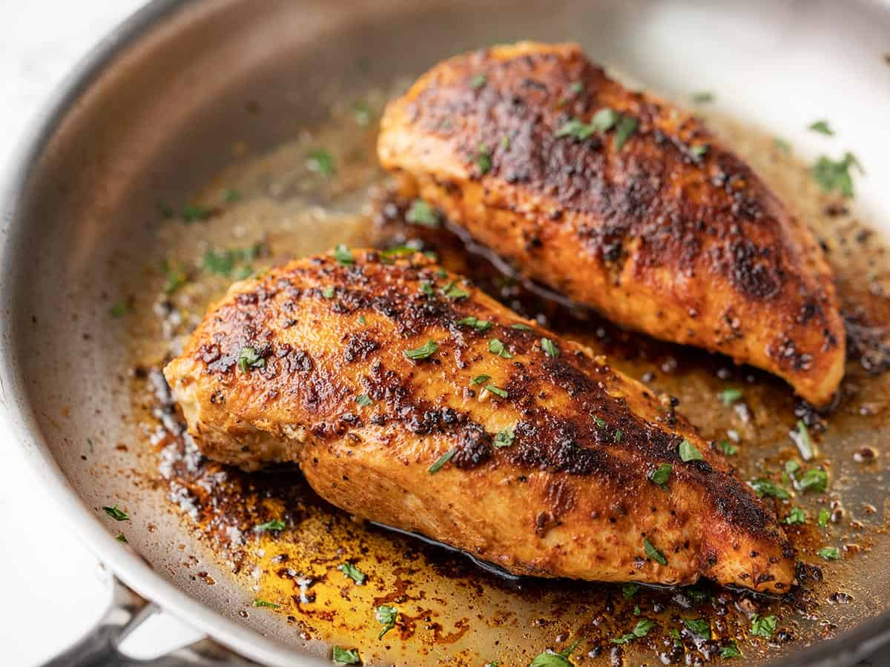

Rice

Description
Ingredients
- 2 chicken breast
- 3 tablespoon butter
- Chicken fajita seasoning
- Paper towels
- 1 tablespoon olive oil
- Parsley
Steps
- Completely dry chicken
- Apply seasoning, pat each side with paper towel
- Pre heat skillet
- Add olive oil
- Add chicken serving side down
- Cook for 3-4 minutes
- Add butter
- Flip chicken, and cook for 3-4 minutes
- Flip chicken, and cook for 3-4 minutes
- Flip chicken, and cook for 3-4 minutes
- Remove, and top with parsley
- Rest for 3-4 minutes
- Cut and serve
>